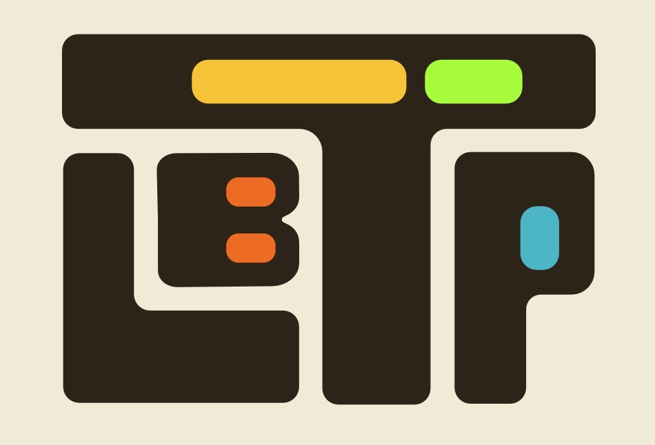
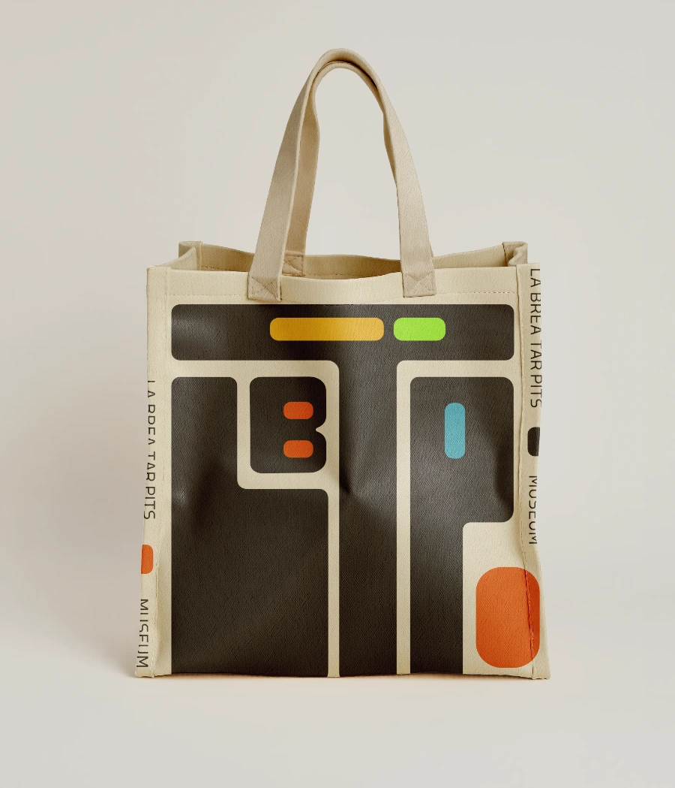
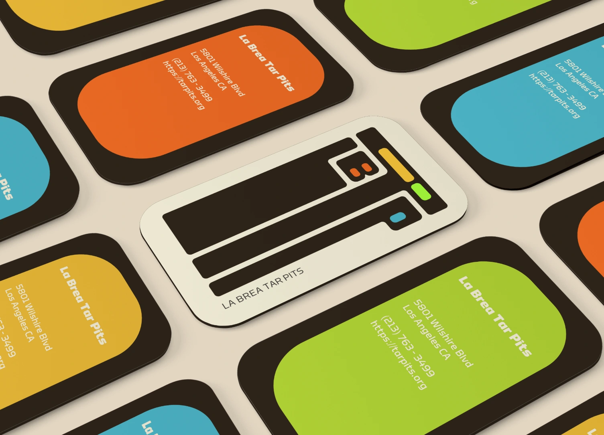
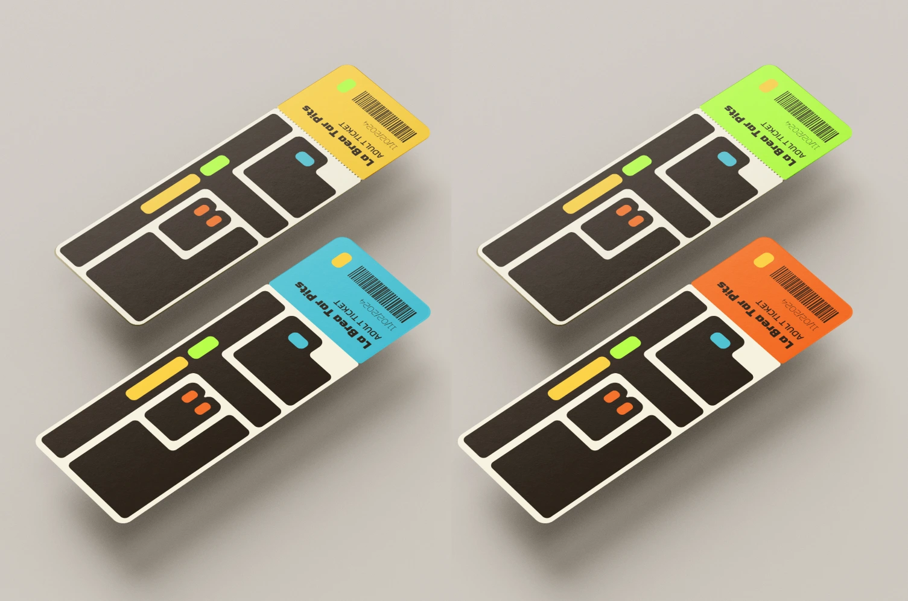
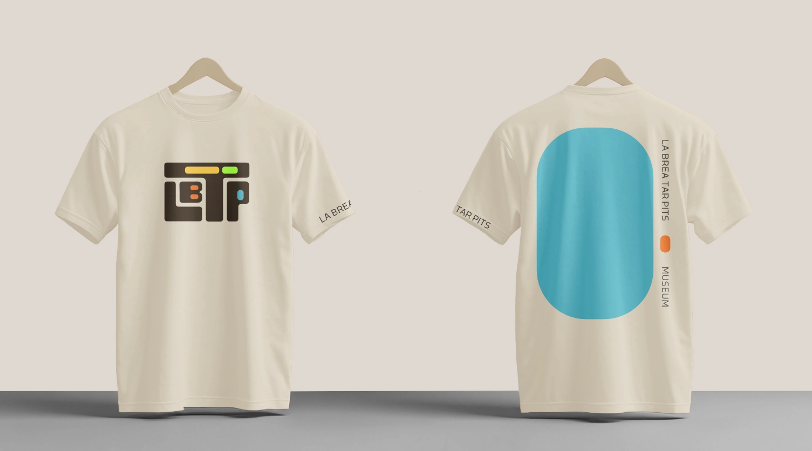
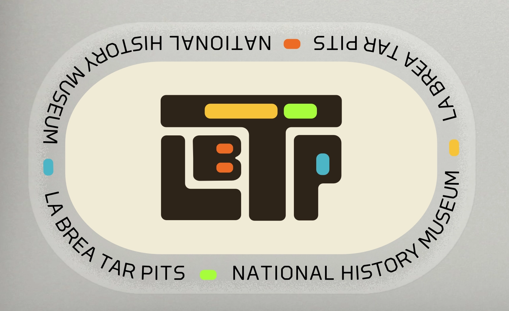
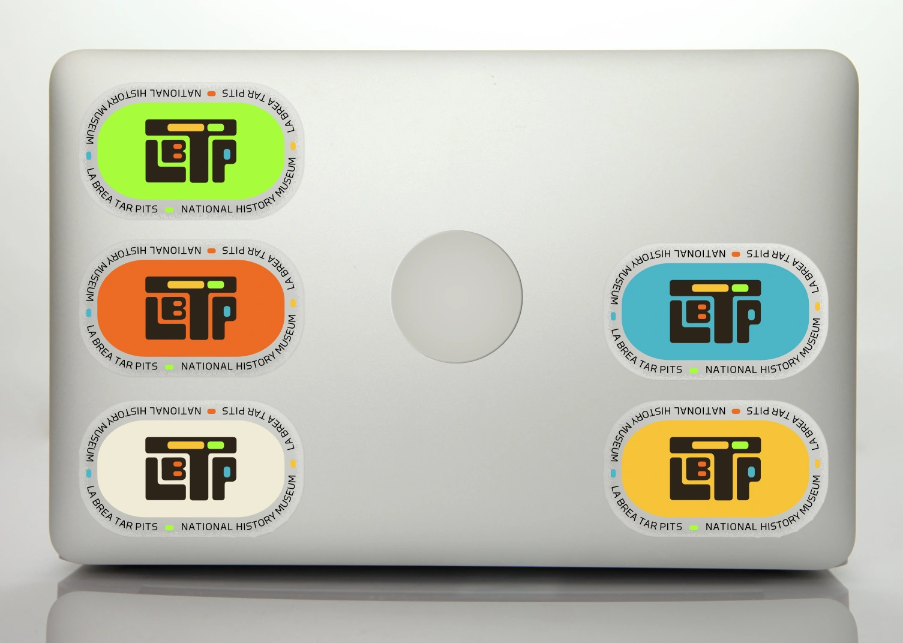

Project Brief
A wayfinding system created for a deep sea aquarium. Graphic visuals were designed to create visually
engaging educational signage that reflects the wonders of scientific discovery, exploration, and otherworldly environments.
Signage was designed for three distinct deep sea habitats: Hydrothermal Vents, Ocean Deserts, and Whale Falls
Brainstorming
I created a handful of wordmaps to gauge my associations before and after diving into research on the three habitats. Once this part of the process was complete, and I had formulated my concept, I sketched out variations and iterations for the aquarium's signage and overall setup.







Typographic Study
I compiled a list of display fonts and text typefaces that matched my concept. I selected a unique display font for each of the three habitats and one unifying text typeface with high redability.